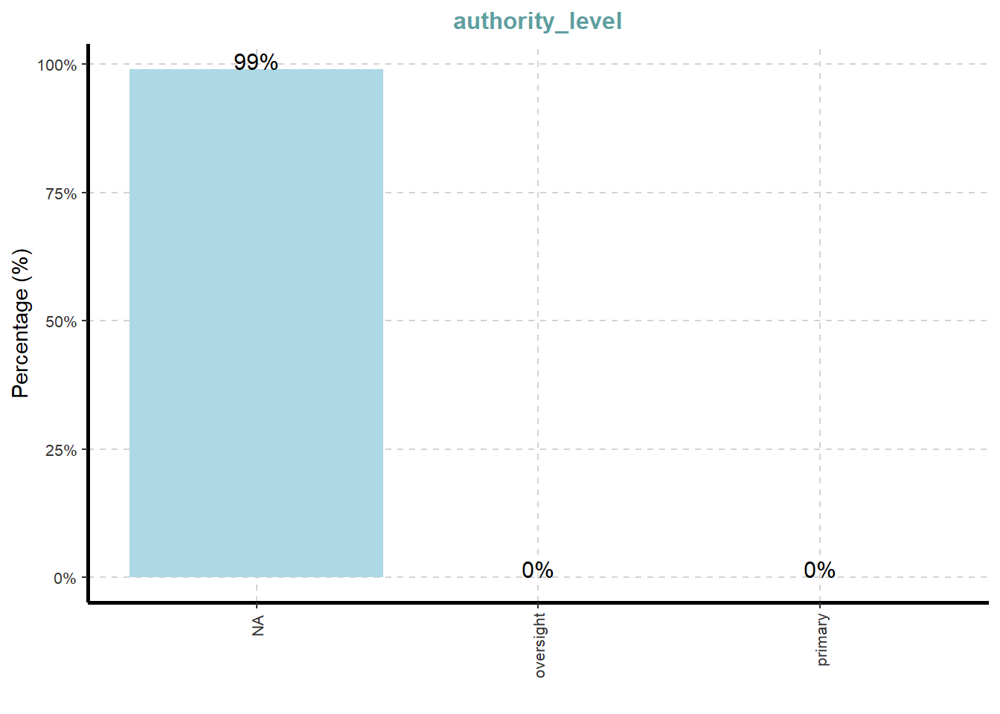

Code
pacman::p_load(tidyverse, jsonlite,
tidygraph, ggraph,
SmartEDA, lubridate,
dplyr, igraph,
grid)For this take-home exercise 2, Mini-Challenge 3 will be chosen and the visualisation will be done on this topic. The background of the mini challenge and the questions will be listed below. For this mini challenge, I will only be displaying and addressing Questions 2 and 3 below.
Over the past decade, the community of Oceanus has faced numerous transformations and challenges evolving from its fishing-centric origins. Following major crackdowns on illegal fishing activities, suspects have shifted investments into more regulated sectors such as the ocean tourism industry, resulting in growing tensions. This increased tourism has recently attracted the likes of international pop star Sailor Shift, who announced plans to film a music video on the island.
Clepper Jessen, a former analyst at FishEye and now a seasoned journalist for the Hacklee Herald, has been keenly observing these rising tensions. Recently, he turned his attention towards the temporary closure of Nemo Reef. By listening to radio communications and utilizing his investigative tools, Clepper uncovered a complex web of expedited approvals and secretive logistics. These efforts revealed a story involving high-level Oceanus officials, Sailor Shift’s team, local influential families, and local conservationist group The Green Guardians, pointing towards a story of corruption and manipulation.
Clepper diligently recorded all intercepted radio communications over the last two weeks. With the help of his intern, they have analyzed their content to identify important events and relationships between key players. The result is a knowledge graph describing the last two weeks on Oceanus. Clepper and his intern have spent a large amount of time generating this knowledge graph, and they would now like some assistance using it to answer the following questions.
Clepper found that messages frequently came in at around the same time each day.
Develop a graph-based visual analytics approach to identify any daily temporal patterns in communications.
How do these patterns shift over the two weeks of observations?
Focus on a specific entity and use this information to determine who has influence over them.
Clepper has noticed that people often communicate with (or about) the same people or vessels, and that grouping them together may help with the investigation.
Use visual analytics to help Clepper understand and explore the interactions and relationships between vessels and people in the knowledge graph.
Are there groups that are more closely associated? If so, what are the topic areas that are predominant for each group?
It was noted by Clepper’s intern that some people and vessels are using pseudonyms to communicate.
Expanding upon your prior visual analytics, determine who is using pseudonyms to communicate, and what these pseudonyms are.
Some that Clepper has already identified include: “Boss”, and “The Lookout”, but there appear to be many more.
To complicate the matter, pseudonyms may be used by multiple people or vessels.
Describe how your visualizations make it easier for Clepper to identify common entities in the knowledge graph.
How does your understanding of activities change given your understanding of pseudonyms?
Clepper suspects that Nadia Conti, who was formerly entangled in an illegal fishing scheme, may have continued illicit activity within Oceanus.
Through visual analytics, provide evidence that Nadia is, or is not, doing something illegal.
Summarize Nadia’s actions visually. Are Clepper’s suspicions justified?
Reflection Questions
Given the task to develop visualizations for knowledge graphs, did you find that the challenge pushed you to develop new techniques for visual representation?
Did you participate in last year’s challenge? If so, did your experience last year help prepare you for this year’s challenge?
What was the most difficult part of working on this year’s data and what could have made it more accessible?
In the code chunk below, p_load() of pacman package is used to load the R packages into R environment.
pacman::p_load(tidyverse, jsonlite,
tidygraph, ggraph,
SmartEDA, lubridate,
dplyr, igraph,
grid)For this exercise, mc3.json file will be used. In the code chunk below, fromJSON() of jsonlite package is used to import mc3.json file into R and save the output object.
MC3 <- fromJSON("data/MC3_graph.json")
MC3_schema <- fromJSON("data/MC3_schema.json")In the code chunk below, glimpse() is used to reveal the structure of the mc3 knowledge graph.
glimpse(MC3)List of 5
$ directed : logi TRUE
$ multigraph: logi FALSE
$ graph :List of 4
..$ mode : chr "static"
..$ edge_default: Named list()
..$ node_default: Named list()
..$ name : chr "VAST_MC3_Knowledge_Graph"
$ nodes :'data.frame': 1159 obs. of 31 variables:
..$ type : chr [1:1159] "Entity" "Entity" "Entity" "Entity" ...
..$ label : chr [1:1159] "Sam" "Kelly" "Nadia Conti" "Elise" ...
..$ name : chr [1:1159] "Sam" "Kelly" "Nadia Conti" "Elise" ...
..$ sub_type : chr [1:1159] "Person" "Person" "Person" "Person" ...
..$ id : chr [1:1159] "Sam" "Kelly" "Nadia Conti" "Elise" ...
..$ timestamp : chr [1:1159] NA NA NA NA ...
..$ monitoring_type : chr [1:1159] NA NA NA NA ...
..$ findings : chr [1:1159] NA NA NA NA ...
..$ content : chr [1:1159] NA NA NA NA ...
..$ assessment_type : chr [1:1159] NA NA NA NA ...
..$ results : chr [1:1159] NA NA NA NA ...
..$ movement_type : chr [1:1159] NA NA NA NA ...
..$ destination : chr [1:1159] NA NA NA NA ...
..$ enforcement_type : chr [1:1159] NA NA NA NA ...
..$ outcome : chr [1:1159] NA NA NA NA ...
..$ activity_type : chr [1:1159] NA NA NA NA ...
..$ participants : int [1:1159] NA NA NA NA NA NA NA NA NA NA ...
..$ thing_collected :'data.frame': 1159 obs. of 2 variables:
.. ..$ type: chr [1:1159] NA NA NA NA ...
.. ..$ name: chr [1:1159] NA NA NA NA ...
..$ reference : chr [1:1159] NA NA NA NA ...
..$ date : chr [1:1159] NA NA NA NA ...
..$ time : chr [1:1159] NA NA NA NA ...
..$ friendship_type : chr [1:1159] NA NA NA NA ...
..$ permission_type : chr [1:1159] NA NA NA NA ...
..$ start_date : chr [1:1159] NA NA NA NA ...
..$ end_date : chr [1:1159] NA NA NA NA ...
..$ report_type : chr [1:1159] NA NA NA NA ...
..$ submission_date : chr [1:1159] NA NA NA NA ...
..$ jurisdiction_type: chr [1:1159] NA NA NA NA ...
..$ authority_level : chr [1:1159] NA NA NA NA ...
..$ coordination_type: chr [1:1159] NA NA NA NA ...
..$ operational_role : chr [1:1159] NA NA NA NA ...
$ edges :'data.frame': 3226 obs. of 5 variables:
..$ id : chr [1:3226] "2" "3" "5" "3013" ...
..$ is_inferred: logi [1:3226] TRUE FALSE TRUE TRUE TRUE TRUE ...
..$ source : chr [1:3226] "Sam" "Sam" "Sam" "Sam" ...
..$ target : chr [1:3226] "Relationship_Suspicious_217" "Event_Communication_370" "Event_Assessment_600" "Relationship_Colleagues_430" ...
..$ type : chr [1:3226] NA "sent" NA NA ...Next, as_tibble() of tibble package is used to extract the nodes and links tibble data frames from mc3 tibble dataframe into two separate tibble dataframes called mc3_nodes and mc3_edges respectively.
mc3_nodes <- as_tibble(MC3$nodes)
mc3_edges <- as_tibble(MC3$edges)In the code chunk below, ExpCatViz() of SmartEDA package is used to reveal the frequency distribution of all categorical fields in mc3_nodes tibble dataframe
ExpCatViz(data=mc3_nodes,
col="lightblue")[[1]]
[[2]]
[[3]]
[[4]]
[[5]]
[[6]]
[[7]]
[[8]]
[[9]]
[[10]]
[[11]]
[[12]]
[[13]]
[[14]]
On the other hand, code chunk below uses ExpCATViz() of SmartEDA package to reveal the frequency distribution of all categorical fields in mc3_edges tibble dataframe
ExpCatViz(data=mc3_edges,
col="lightblue")[[1]]
The code chunk below performs the following data cleaning tasks:
convert values in id field into character data type
exclude records with id value
exclude records with similar id values
exclude thing_collected field
save the cleaned tibble dataframe into a new tibble datatable called mc_nodes_cleaned
mc3_nodes_cleaned <- mc3_nodes %>%
mutate(id = as.character(id)) %>%
filter(!is.na(id)) %>%
distinct(id, .keep_all = TRUE) %>%
select(-thing_collected)Next, the code chunk will be used to:
rename source and target fields to form_id and to_id respectively
convert values in from_id and to_id fields to character data type
exclude values in from_id and to_id which is not found in the id field of mc3_nodes_cleaned
exclude records whereby from_id and/or to_id values are missing
save the cleaned tibble dataframe and call it mc3_edges_cleaned
mc3_edges_cleaned <- mc3_edges %>%
rename(from_id = source,
to_id = target) %>%
mutate(across(c(from_id, to_id),
as.character)) %>%
filter(from_id %in% mc3_nodes_cleaned$id,
to_id %in% mc3_nodes_cleaned$id) %>%
filter(!is.na(from_id), !is.na(to_id))Next, code chunk below will be used to create mapping of character id in mc3_nodes_cleaned to row index.
node_index_lookup <- mc3_nodes_cleaned %>%
mutate(.row_id = row_number()) %>%
select(id, .row_id)Next, the code chunk below will be used to join and convert from_id and to_id to integer indices. At the same time, we will drop rows with unmatched nodes.
mc3_edges_indexed <- mc3_edges_cleaned %>%
left_join(node_index_lookup,
by = c("from_id" = "id")) %>%
rename(from = .row_id) %>%
left_join(node_index_lookup,
by = c("to_id" = "id")) %>%
rename(to = .row_id) %>%
select(from, to, is_inferred, type) %>%
filter(!is.na(from) & !is.na(to)) Next, the code chunk below is used to subset nodes to only those referenced by edges
used_node_indices <- sort(
unique(c(mc3_edges_indexed$from,
mc3_edges_indexed$to)))
mc3_nodes_final <- mc3_nodes_cleaned %>%
slice(used_node_indices) %>%
mutate(new_index = row_number())We will then use th code chunk below to rebuild lookup from old index to new index
old_to_new_index <- tibble(
old_index = used_node_indices,
new_index = seq_along(
used_node_indices))Lastly, the code chunk below will be used to update edge indices to match new node table
mc3_edges_final <- mc3_edges_indexed %>%
left_join(old_to_new_index,
by = c("from" = "old_index")) %>%
rename(from_new = new_index) %>%
left_join(old_to_new_index,
by = c("to" = "old_index")) %>%
rename(to_new = new_index) %>%
select(from = from_new, to = to_new,
is_inferred, type)glimpse(mc3_edges_final)Rows: 3,226
Columns: 4
$ from <int> 1, 1, 1, 1, 1, 1, 1, 2, 2, 2, 2, 3, 3, 3, 3, 3, 3, 3, 3, 3…
$ to <int> 1138, 357, 747, 895, 876, 888, 896, 145, 404, 876, 888, 92…
$ is_inferred <lgl> TRUE, FALSE, TRUE, TRUE, TRUE, TRUE, TRUE, FALSE, FALSE, T…
$ type <chr> NA, "sent", NA, NA, NA, NA, NA, "sent", "sent", NA, NA, NA…mc3_graph <- tbl_graph(
nodes = mc3_nodes_final,
edges = mc3_edges_final,
directed = TRUE
)str(mc3_graph)Classes 'tbl_graph', 'igraph' hidden list of 10
$ : num 1159
$ : logi TRUE
$ : num [1:3226] 0 0 0 0 0 0 0 1 1 1 ...
$ : num [1:3226] 1137 356 746 894 875 ...
$ : NULL
$ : NULL
$ : NULL
$ : NULL
$ :List of 4
..$ : num [1:3] 1 0 1
..$ : Named list()
..$ :List of 31
.. ..$ type : chr [1:1159] "Entity" "Entity" "Entity" "Entity" ...
.. ..$ label : chr [1:1159] "Sam" "Kelly" "Nadia Conti" "Elise" ...
.. ..$ name : chr [1:1159] "Sam" "Kelly" "Nadia Conti" "Elise" ...
.. ..$ sub_type : chr [1:1159] "Person" "Person" "Person" "Person" ...
.. ..$ id : chr [1:1159] "Sam" "Kelly" "Nadia Conti" "Elise" ...
.. ..$ timestamp : chr [1:1159] NA NA NA NA ...
.. ..$ monitoring_type : chr [1:1159] NA NA NA NA ...
.. ..$ findings : chr [1:1159] NA NA NA NA ...
.. ..$ content : chr [1:1159] NA NA NA NA ...
.. ..$ assessment_type : chr [1:1159] NA NA NA NA ...
.. ..$ results : chr [1:1159] NA NA NA NA ...
.. ..$ movement_type : chr [1:1159] NA NA NA NA ...
.. ..$ destination : chr [1:1159] NA NA NA NA ...
.. ..$ enforcement_type : chr [1:1159] NA NA NA NA ...
.. ..$ outcome : chr [1:1159] NA NA NA NA ...
.. ..$ activity_type : chr [1:1159] NA NA NA NA ...
.. ..$ participants : int [1:1159] NA NA NA NA NA NA NA NA NA NA ...
.. ..$ reference : chr [1:1159] NA NA NA NA ...
.. ..$ date : chr [1:1159] NA NA NA NA ...
.. ..$ time : chr [1:1159] NA NA NA NA ...
.. ..$ friendship_type : chr [1:1159] NA NA NA NA ...
.. ..$ permission_type : chr [1:1159] NA NA NA NA ...
.. ..$ start_date : chr [1:1159] NA NA NA NA ...
.. ..$ end_date : chr [1:1159] NA NA NA NA ...
.. ..$ report_type : chr [1:1159] NA NA NA NA ...
.. ..$ submission_date : chr [1:1159] NA NA NA NA ...
.. ..$ jurisdiction_type: chr [1:1159] NA NA NA NA ...
.. ..$ authority_level : chr [1:1159] NA NA NA NA ...
.. ..$ coordination_type: chr [1:1159] NA NA NA NA ...
.. ..$ operational_role : chr [1:1159] NA NA NA NA ...
.. ..$ new_index : int [1:1159] 1 2 3 4 5 6 7 8 9 10 ...
..$ :List of 2
.. ..$ is_inferred: logi [1:3226] TRUE FALSE TRUE TRUE TRUE TRUE ...
.. ..$ type : chr [1:3226] NA "sent" NA NA ...
$ :<environment: 0x000001f9f2b629a0>
- attr(*, "active")= chr "nodes"Several of the ggraph layouts involve randomisation. In order to ensure reproducibility, it is necessary to set the seed value before plotting by using the code chunk below.
set.seed(1234)In the code chunk below, ggraph functions are used to create the whole graph
ggraph(mc3_graph,
layout = "fr") +
geom_edge_link(alpha = 0.3,
colour = "gray") +
geom_node_point(aes(color = `type`),
size = 4) +
geom_node_text(aes(label = type),
repel = TRUE,
size = 1.0) +
theme_void()
For nodes, the code filter() will be used to filter out only Person and Vessel from Entity, and Communication from Event and their relationship.
After this filter, the nodes only contain:
entity nodes whose sub_type is Person or Vessel
Event nodes whose sub_type is Communication
Any node whose type is Relationship.
mutate() adds a new column called idx to the filtered data frame
select() extracts 2 columns from selected_nodes and give them a new id and rename to id_map
For Edges, filter() keeps only those where both endpoints are in the old column of id_map.
left_join() matches each row’s to value against id_map$old and brings in id_map$new for that to node and renames it to_new. Same thing for the from column.
selected_nodes <- mc3_nodes_final %>%
filter(
(type == "Entity" & sub_type %in% c("Person", "Vessel")) |
(type == "Event" & sub_type == "Communication") |
(type == "Relationship")
) %>%
mutate(idx = row_number())
# mapping old_index → new idx
id_map <- selected_nodes %>%
select(old = new_index, new = idx)
# 2. filter edges so both ends are in selected_nodes
selected_edges <- mc3_edges_final %>%
filter(from %in% id_map$old, to %in% id_map$old) %>%
# 3. re-index the endpoints
left_join(id_map, by = c("from" = "old")) %>%
rename(from_new = new) %>%
left_join(id_map, by = c("to" = "old")) %>%
rename(to_new = new) %>%
select(from = from_new, to = to_new, type)Step 1: we proceed to filter() only the edges that we want, specifically sent, received and evidence_for. The labels for the edges show “sent”, “received” and “evidence_for” using transmute().
Step 2: We then build the node table and colour by sub_type which is called group. The label for the names/vessels will be placed under the node using label.
Step 3: Draw a Visnetwork graph.
library(dplyr)
library(tidyr) # for pivot_longer()
library(visNetwork)
library(RColorBrewer)
# 1. Build sender/receiver pairs and their relationship nodes
send_pairs <- mc3_edges_final %>%
filter(type == "sent") %>%
rename(sender = from, comm = to) %>%
select(sender, comm)
recv_pairs <- mc3_edges_final %>%
filter(type == "received") %>%
rename(receiver = to, comm = from) %>%
select(receiver, comm)
rel_edges <- mc3_edges_final %>%
filter(type %in% c("evidence_for", "is_inferred")) %>%
rename(rel = to, comm = from) %>%
select(rel, comm)
# 2. Join to get each (sender, receiver, rel) for every communication event
triplets <- send_pairs %>%
inner_join(recv_pairs, by = "comm") %>%
inner_join(rel_edges, by = "comm") %>%
mutate(
person1 = pmin(sender, receiver),
person2 = pmax(sender, receiver)
) %>%
distinct(person1, person2, rel, .keep_all = TRUE) %>%
select(person1, person2, rel)
# 3. Collect unique node‐IDs used (persons/vessels and relationship nodes)
node_ids_used <- unique(c(triplets$person1, triplets$person2, triplets$rel))
# 4. Build a lookup of node info for those IDs,
# but filter to only Person/Vessel entity subtypes and Relationship nodes
nodes_sub <- mc3_nodes_final %>%
filter(new_index %in% node_ids_used) %>%
filter(
sub_type %in% c("Person", "Vessel") |
type == "Relationship"
) %>%
select(new_index, label, sub_type, type)
# 4a. Define pleasing, non‐grey colors for entity subtypes
entity_color_map <- tibble(
sub_type = c("Person", "Vessel"),
color = c("#2c7fb8", "#e6550d") # blue for Person, orange for Vessel
)
# 4b. Identify all relationship subtypes and assign distinct, visually pleasing colors
rel_subtypes <- nodes_sub %>%
filter(type == "Relationship") %>%
distinct(sub_type) %>%
arrange(sub_type) %>%
pull(sub_type)
n_rels <- length(rel_subtypes)
if (n_rels > 0) {
base_palette <- brewer.pal(min(n_rels, 8), "Set2")
if (n_rels > length(base_palette)) {
rel_colors <- colorRampPalette(base_palette)(n_rels)
} else {
rel_colors <- base_palette[1:n_rels]
}
rel_color_map <- tibble(
sub_type = rel_subtypes,
color = rel_colors
)
} else {
rel_color_map <- tibble(sub_type = character(0), color = character(0))
}
# 4c. Combine entity and relationship color mappings
color_map <- bind_rows(entity_color_map, rel_color_map)
# 4d. Build nodes_vis with assigned colors (no grey)
nodes_vis <- nodes_sub %>%
left_join(color_map, by = "sub_type") %>%
transmute(
id = new_index,
label = label,
sub_type = sub_type,
color = color
)
# 5. Build the visNetwork 'edges' data frame
# 5a. Edges between the two people/vessels (no label)
edges_comm_vis <- triplets %>%
transmute(
from = person1,
to = person2,
label = "", # no “comm” text
width = 2,
arrows = "to"
)
# 5b. For each triplet, connect both persons to the relationship node (no label)
edges_rel_vis <- triplets %>%
pivot_longer(
cols = c(person1, person2),
names_to = NULL,
values_to = "person"
) %>%
transmute(
from = person,
to = rel,
label = "", # no text here
width = 1,
arrows = "to"
)
# 5c. Combine both sets of edges
edges_vis <- bind_rows(edges_comm_vis, edges_rel_vis)
# 6. Draw the visNetwork with a dropdown filter by sub_type.
# Legend shows only subtypes in the graph, in oval shape, larger, and using our custom colors.
visNetwork(nodes_vis, edges_vis) %>%
visNodes(
borderWidth = 1,
borderWidthSelected = 2
) %>%
visEdges(
arrows = "to",
color = list(color = "#333333", highlight = "#FF0000"), # dark edge color
font = list(align = "middle")
) %>%
visOptions(
highlightNearest = TRUE,
nodesIdSelection = TRUE,
selectedBy = "sub_type"
) %>%
visLegend(
addNodes = data.frame(
label = color_map$sub_type,
shape = "ellipse",
color = color_map$color,
size = rep(20, nrow(color_map))
),
useGroups = FALSE
)# 7. Exclude all “Vessel” nodes and any edges involving them
nodes_vis2 <- nodes_vis %>%
filter(sub_type != "Vessel")
edges_vis2 <- edges_vis %>%
filter(from %in% nodes_vis2$id, to %in% nodes_vis2$id)
# 8. Build a reduced legend data.frame for the remaining subtypes
legend_map2 <- color_map %>%
filter(sub_type %in% unique(nodes_vis2$sub_type))
# 9. Draw the new visNetwork without Vessel nodes
visNetwork(nodes_vis2, edges_vis2) %>%
visNodes(
borderWidth = 1,
borderWidthSelected = 2
) %>%
visEdges(
arrows = "to",
color = list(color = "#333333", highlight = "#FF0000"),
font = list(align = "middle")
) %>%
visOptions(
highlightNearest = TRUE,
nodesIdSelection = TRUE,
selectedBy = "sub_type"
) %>%
visLegend(
addNodes = data.frame(
label = legend_map2$sub_type,
shape = "ellipse",
color = legend_map2$color,
size = rep(20, nrow(legend_map2))
),
useGroups = FALSE
)By selecting the different sub-groups from the drop-down below, we can conclude the following information.
Colleagues:
Boss, Mrs Money and The Middleman
Boss, The Accountant and The Middleman
The Lookout, The Intern and Mrs Money
Mrs Money and The Intern
Boss and Mrs Money
Boss and Rodriguez
Small Fry and Davis
Nadia Conti and Davis
Nadia Conti and Elise
Nadia Conti and Liam Thorne
Sam and Kelly
Friends:
Sam and Kelly
The Intern and The Lookout
Unfriendly:
Suspicious:
From the above results, it can be seen that either Sam or Kelly holds the status of The Intern and The Lookout as they are the only ones with the relationship of friends in the conclusion above.
Boss seems to be the one with the most information and power as Mrs Money, The Accountant and The Middlman transmit information to The Boss only
Based on the question 2b, I have categorised them into the 3 different Entity Subgroups: Person, Organisation and Vessel
library(dplyr)
library(tidytext)
library(wordcloud)
# 1. Extract communication‐event nodes with their new_index and content
comm_nodes <- mc3_nodes_final %>%
filter(type == "Event", sub_type == "Communication") %>%
select(event_index = new_index, content)
# 2. Build a mapping from communication events to entities (Organization subtype)
send_map <- mc3_edges_final %>%
filter(type == "sent") %>%
transmute(entity_index = from, event_index = to)
recv_map <- mc3_edges_final %>%
filter(type == "received") %>%
transmute(event_index = from, entity_index = to)
event_to_entity <- bind_rows(send_map, recv_map)
# 3. Join event_to_entity with comm_nodes, then keep only Organization entities
comm_by_entity <- event_to_entity %>%
inner_join(comm_nodes, by = "event_index") %>%
inner_join(
mc3_nodes_final %>%
select(entity_index = new_index, sub_type, label),
by = "entity_index"
) %>%
filter(sub_type == "Organization") %>%
select(organization = label, content)
# 4. Collapse all texts per organization
org_texts <- comm_by_entity %>%
group_by(organization) %>%
summarize(text = paste(content, collapse = " "), .groups = "drop")
# 5. Tokenize, remove stop‐words, and compute word frequencies per organization
tidy_org_words <- org_texts %>%
unnest_tokens(word, text) %>%
anti_join(stop_words, by = "word") %>%
count(organization, word, sort = TRUE)
# 6. Plot one word cloud per organization
org_list <- unique(tidy_org_words$organization)
n_orgs <- length(org_list)
n_cols <- 3
n_rows <- ceiling(n_orgs / n_cols)
par(mfrow = c(n_rows, n_cols), mar = c(0, 0, 0, 0))
for (org in org_list) {
freq_tbl <- tidy_org_words %>% filter(organization == org)
if (nrow(freq_tbl) == 0) {
plot.new()
title(main = org)
next
}
v <- setNames(freq_tbl$n, freq_tbl$word)
wordcloud(
words = names(v),
freq = as.numeric(v),
max.words = 20,
scale = c(3, 0.5),
random.order = FALSE
)
title(main = org, line = -1)
}
par(mfrow = c(1, 1))For Organisation: It can be seen that Team Glitters does not have any pre-dominant topic area.
Oceanus City Council, Sailor Shift Team and Green Guardians seems to have common words like nemo, city, reef ,equipment and vessel, showing that they are more concerned about the environment.
V. Miesel Shipping however, is more concerned about regulations as the most commonly used words are permit, operations and documentation.
# (Assuming you already have mc3_nodes_final and mc3_edges_final loaded)
library(dplyr)
library(tidytext)
library(wordcloud)
# 1. Extract communication‐event nodes with their new_index and content
comm_nodes <- mc3_nodes_final %>%
filter(type == "Event", sub_type == "Communication") %>%
select(event_index = new_index, content)
# 2. Build a mapping from communication events to entities
send_map <- mc3_edges_final %>%
filter(type == "sent") %>%
transmute(entity_index = from, event_index = to)
recv_map <- mc3_edges_final %>%
filter(type == "received") %>%
transmute(event_index = from, entity_index = to)
event_to_entity <- bind_rows(send_map, recv_map)
# 3. Join event_to_entity with comm_nodes, then keep only Person entities
comm_by_person <- event_to_entity %>%
inner_join(comm_nodes, by = "event_index") %>%
inner_join(
mc3_nodes_final %>%
select(entity_index = new_index, sub_type, label),
by = "entity_index"
) %>%
filter(sub_type == "Person") %>%
select(person = label, content)
# 4. Collapse all texts per person
person_texts <- comm_by_person %>%
group_by(person) %>%
summarize(text = paste(content, collapse = " "), .groups = "drop")
# 5. Tokenize, remove stop‐words, and compute word frequencies per person
tidy_person_words <- person_texts %>%
unnest_tokens(word, text) %>%
anti_join(stop_words, by = "word") %>%
count(person, word, sort = TRUE)
# 6. Plot one word cloud per person
person_list <- unique(tidy_person_words$person)
n_persons <- length(person_list)
n_cols <- 4
n_rows <- ceiling(n_persons / n_cols)
par(mfrow = c(n_rows, n_cols), mar = c(0, 0, 0, 0))
for (p in person_list) {
freq_tbl <- tidy_person_words %>% filter(person == p)
if (nrow(freq_tbl) == 0) {
plot.new()
title(main = p)
next
}
v <- setNames(freq_tbl$n, freq_tbl$word)
wordcloud(
words = names(v),
freq = as.numeric(v),
max.words = 10,
scale = c(3, 0.5),
random.order = FALSE
)
title(main = p, line = -1)
}
par(mfrow = c(1, 1))For Person Subgroups:
Top 3 Commonly Used Words:
Mrs Money: Meeting, Nemo Reef, Intern
The Intern: Nemo Reef, Lookout, Money
The Lookout: Nemo Reef, Intern, tomorrow
Boss: Nemo Reef, meeting, middleman
The Middleman: Nemo reef, boss, meeting
The Accountant: meeting, middleman, boss
It can be seen that these 6 people are in contact with each other as their most commonly used terms concern each other and usually revolves around Nemo Reef.
Liam Thorne: Nemo Reef, council, report
Nadia Conti: Nemo Reef, documentation, meeting
Rodriguez: Nemo reef, davis, remora
Samantha Blake: Nemo Reef, tomorrow, city council
Elise: Nemo Reef, tomorrow, meeting
It can also be seen that these group of people have common schedules like meeting, tomorrow and City Council, and they are also concerned about Nemo Reef.
Clepper Jensen: Miranda, equipment, environmental
Miranda Jordan: Miranda, equipment, clepper Jensen
Davis: Mako, security, equipment
Sam: birdwatching, lookout, reef
Mako: try, team, remora
Kelly: sam, kelly
These group of people here have different focus and do not have commonailities with the groups above.
# 1. Extract communication‐event nodes with their new_index and content
comm_nodes <- mc3_nodes_final %>%
filter(type == "Event", sub_type == "Communication") %>%
select(event_index = new_index, content)
# 2. Build a mapping from communication events to entities (sender/receiver)
send_map <- mc3_edges_final %>%
filter(type == "sent") %>%
transmute(entity_index = from, event_index = to)
recv_map <- mc3_edges_final %>%
filter(type == "received") %>%
transmute(event_index = from, entity_index = to)
event_to_entity <- bind_rows(send_map, recv_map)
# 3. Join event_to_entity with comm_nodes, then keep only Vessel entities
comm_by_vessel <- event_to_entity %>%
inner_join(comm_nodes, by = "event_index") %>%
inner_join(
mc3_nodes_final %>%
select(entity_index = new_index, sub_type, label),
by = "entity_index"
) %>%
filter(sub_type == "Vessel") %>% # <— change here
select(vessel = label, content)
# 4. Collapse all texts per vessel
vessel_texts <- comm_by_vessel %>%
group_by(vessel) %>%
summarize(text = paste(content, collapse = " "), .groups = "drop")
# 5. Tokenize, remove stop‐words, and compute word frequencies per vessel
tidy_vessel_words <- vessel_texts %>%
unnest_tokens(word, text) %>%
anti_join(stop_words, by = "word") %>%
count(vessel, word, sort = TRUE)
# 6. Plot one word cloud per vessel
vessel_list <- unique(tidy_vessel_words$vessel)
n_vess <- length(vessel_list)
n_cols <- 4
n_rows <- ceiling(n_vess / n_cols)
par(mfrow = c(n_rows, n_cols), mar = c(0, 0, 0, 0))
for (ves in vessel_list) {
freq_tbl <- tidy_vessel_words %>% filter(vessel == ves)
if (nrow(freq_tbl) == 0) {
plot.new()
title(main = ves)
next
}
v <- setNames(freq_tbl$n, freq_tbl$word)
wordcloud(
words = names(v),
freq = as.numeric(v),
max.words = 20,
scale = c(3, 0.5),
random.order = FALSE
)
title(main = ves, line = -1)
}
par(mfrow = c(1, 1))library(patchwork)
daily_comms <- selected_nodes %>%
filter(type=="Event", sub_type=="Communication") %>%
mutate(date=as_date(timestamp)) %>%
select(idx, date)
all_dates <- sort(unique(daily_comms$date)) %>% discard(is.na)
plots <- map(all_dates, function(d) {
comm_idx <- daily_comms %>% filter(date==d) %>% pull(idx)
es <- selected_edges %>% filter(type=="sent", to %in% comm_idx) %>% transmute(comm=to, sender=from)
er <- selected_edges %>% filter(type=="received", from %in% comm_idx) %>% transmute(comm=from, receiver=to)
dp <- inner_join(es, er, by="comm") %>% transmute(from=sender, to=receiver, type="sent")
if (nrow(dp)==0) return(NULL)
nodes_d <- selected_nodes %>%
filter(idx %in% unique(c(dp$from, dp$to)), sub_type %in% c("Person", "Vessel"))
dp <- dp %>% filter(from %in% nodes_d$idx, to %in% nodes_d$idx)
if (nrow(dp)==0) return(NULL)
nm <- tibble(old=nodes_d$idx, new=seq_len(nrow(nodes_d)))
edges2 <- dp %>%
left_join(nm, by=c("from"="old")) %>% mutate(from=new) %>% select(-new) %>%
left_join(nm, by=c("to"="old")) %>% mutate(to=new) %>% select(-new)
nodes2 <- nodes_d %>% mutate(idx2=seq_len(nrow(nodes_d)))
g <- tbl_graph(nodes=nodes2, edges=edges2, directed=TRUE)
lay <- create_layout(g, layout="fr", niter=500, area=vcount(g)^2, repulse=vcount(g)^1.2)
ggraph(lay) +
geom_edge_link(aes(color=type),
arrow=arrow(length=unit(4,"mm"), type="closed"),
alpha=0.8, width=1) +
geom_node_point(aes(color=sub_type), size=4) +
geom_node_text(aes(label=ifelse(sub_type %in% c("Person","Vessel"), label, "")),
repel=TRUE, point.padding=unit(0.5,"lines"),
box.padding=unit(0.5,"lines"), size=6) +
scale_edge_color_manual(values=c(sent="#7570B3")) +
scale_color_manual(values=c(Person="#1b9e77", Vessel="#d95f02")) +
ggtitle(as.character(d)) +
theme_void() +
theme(plot.title=element_text(size=12,hjust=0.5), legend.position="right")
})
wrap_plots(plots, ncol=2) +
plot_layout(guides="collect") +
plot_annotation(title="MC3 Communications by Day")Additional visualisations are done below to further investigate the communication between the pseudonyms and real names.
library(dplyr)
library(visNetwork)
# 1. Keep only Person/Vessel nodes, assigning colors by sub_type
nodes <- selected_nodes %>%
filter(sub_type %in% c("Person", "Vessel")) %>%
transmute(
id = idx,
label = label,
color = ifelse(sub_type == "Person", "#1b9e77", "#d95f02")
)
# 2. Build direct sender→receiver pairs from communication events
es <- selected_edges %>%
filter(type == "sent") %>%
transmute(comm = to, sender = from)
er <- selected_edges %>%
filter(type == "received") %>%
transmute(comm = from, receiver = to)
# 3. Join on the communication node to get from→to, then count occurrences
dp <- inner_join(es, er, by = "comm") %>%
transmute(from = sender, to = receiver)
edges <- dp %>%
count(from, to, name = "count") %>%
filter(from %in% nodes$id, to %in% nodes$id) %>%
mutate(width = count, label = as.character(count))
# 4. Draw a visNetwork: node colors by type, edge width and label by count
visNetwork(nodes, edges) %>%
visIgraphLayout(layout = "layout_with_fr", randomSeed = 123) %>%
visEdges(
arrows = "to",
color = list(color = "#AAAAAA", highlight = "#FF0000"),
font = list(align = "middle")
) %>%
visOptions(
highlightNearest = TRUE,
nodesIdSelection = TRUE
)The pseudonyms used are:
Boss
The Intern
Mrs Money
The Lookout
The Accountant
The Middleman
My visualisations help to break down the communication on a daily basis and to draw the connections between the different people based on their communication groups.
From the figures above, it can be seen that the Boss is mostly always on the receiving end of the communication, with the exception of Mako(Vessel). The ones who are in direct contact with Boss are Mrs Money, The Middleman, Rodriguez, Davis, Liam Thorne, The Accountant and Mako (Vessel).
Mrs Money, however, receives information mainly from The Intern.
The Lookout and The Intern, however, usually communicates in both directions, with The Intern usually on the receiving end of information.
The Accountant only got communicated with Boss on 11 October and he is often communicating with The Middleman.
The Lookout also sends informations to Sam.
There is a clear hierachy when sending information:
Lookout -> Intern -> Mrs Money/The Accountant/The Middleman -> Boss
Lookout -> Sam
These visualisations have confirmed my understanding that Boss is likely the leader of the group and the Vessel that is in contact with boss is likely Mako for illegal activities. The illegal activities should be taking place around Nemo Reef or meetings are held around Nemo Reef. The ones of higher positions are probably Mrs Money, The Middleman and The Accountant who reports directly to Boss.
Rodriguez, Liam Thorne and Davis seem to be involved directly with The Boss as well.
Strangely, Nadia Conti seems to be at the receiving end of the communciation from Elise, Davis and Rodriguez and only replies to Liam Thorne. Nadia Conti is also in contact with several vessels.
The Intern and The Lookout seems to be of the same position in the syndicate, but The Intern is the only one who communicates with Mrs Money.
The Lookout seems to be reporting to Sam as well, as the communication is always in 1 direction.
From all the previous analysis, I would like to conclude that Rodriguez and Davis are likely involved in the illegal activities as they are in direct contact with Boss. Sam is also likely involved as The Lookout reports to him frequently.